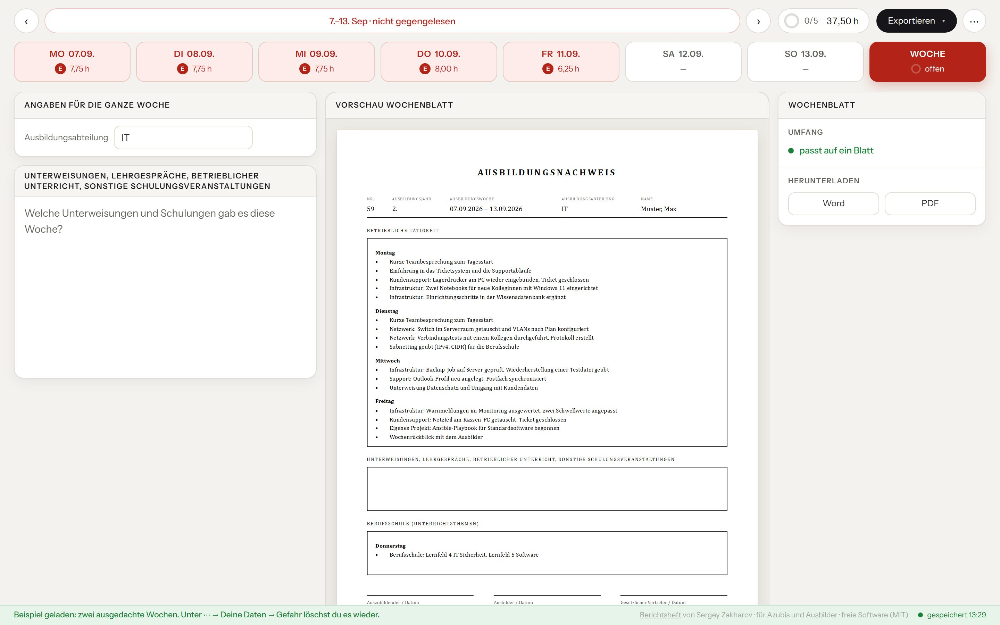

01
Berichtsheft
v0.5.0Der IHK-Ausbildungsnachweis aus dem CSV-Export der Zeiterfassung, als Word oder PDF.

Was es kann
Liest Clockify, Harvest, Jira mit Tempo, Kimai, Toggl Track oder Excel und schreibt Wochenblätter nach IHK-Vordruck.
Wie es läuft
Eine HTML-Datei, auch offline. Auf Wunsch mit Server, Konten und einer Ansicht für Ausbilder.
Gebaut mit
JavaScript ohne Framework, docx, Node, PostgreSQL, OIDC. Getestet mit Playwright.